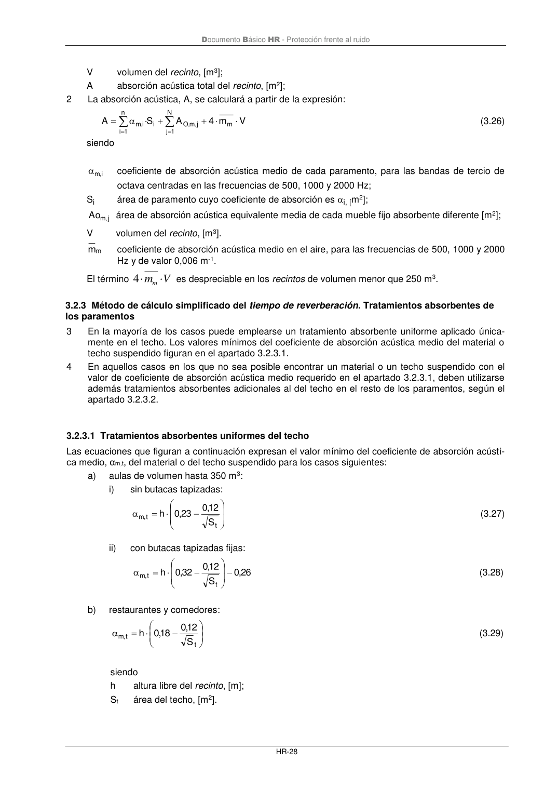

DB-HR · Página 34 · versión 2019-12-20
SHA256: a67baeca5138bb1f121f797d23a79a4557bd9ac4abacd954024893e05411eeab · página física 34 de 80 · métodos de encabezado
solo si están cotejados.
Formatos: Markdown · JSON de bloques · PDF p. 34 · imagen PNG
Documento Básico HR - Protección frente al ruido HR-28 V volumen del recinto, [m3]; A absorción acústica total del recinto, [m2]; 2 La absorción acústica, A, se calculará a partir de la expresión: V m 4 A S · A m N 1 j j, m , O n 1 i i i, m + + = = = (3.26) siendo i, m coeficiente de absorción acústica medio de cada paramento, para las bandas de tercio de octava centradas en las frecuencias de 500, 1000 y 2000 Hz; Si área de paramento cuyo coeficiente de absorción es i, [m2]; j, m Ao área de absorción acústica equivalente media de cada mueble fijo absorbente diferente [m2]; V volumen del recinto, [m3]. m m coeficiente de absorción acústica medio en el aire, para las frecuencias de 500, 1000 y 2000 Hz y de valor 0,006 m-1. El término V mm 4 es despreciable en los recintos de volumen menor que 250 m3. 3.2.3 Método de cálculo simplificado del tiempo de reverberación. Tratamientos absorbentes de los paramentos 3 En la mayoría de los casos puede emplearse un tratamiento absorbente uniforme aplicado única- mente en el techo. Los valores mínimos del coeficiente de absorción acústica medio del material o techo suspendido figuran en el apartado 3.2.3.1. 4 En aquellos casos en los que no sea posible encontrar un material o un techo suspendido con el valor de coeficiente de absorción acústica medio requerido en el apartado 3.2.3.1, deben utilizarse además tratamientos absorbentes adicionales al del techo en el resto de los paramentos, según el apartado 3.2.3.2. 3.2.3.1 Tratamientos absorbentes uniformes del techo Las ecuaciones que figuran a continuación expresan el valor mínimo del coeficiente de absorción acústi- ca medio, αm,t, del material o del techo suspendido para los casos siguientes: a) aulas de volumen hasta 350 m3: i) sin butacas tapizadas: − = t t, m S 12 ,0 23 ,0 h (3.27) ii) con butacas tapizadas fijas: 26 ,0 S 12 ,0 32 ,0 h t t, m − − = (3.28) b) restaurantes y comedores: − = t t, m S 12 ,0 18 ,0 h (3.29) siendo h altura libre del recinto, [m]; St área del techo, [m2].
